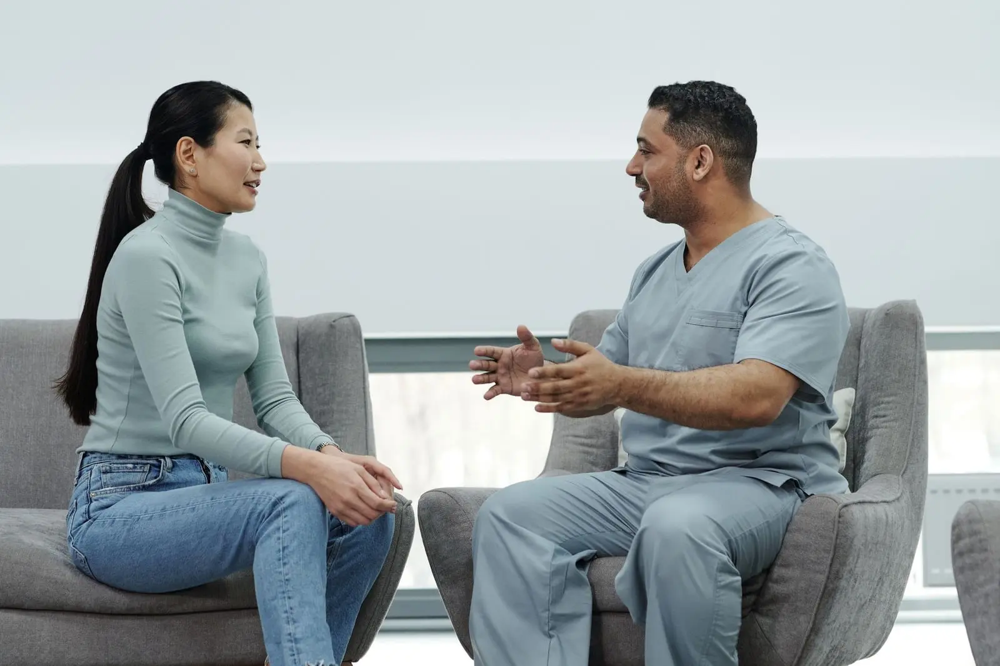

What to Expect at Your First Prosthetic Leg Fitting
A simple, step-by-step look at what happens from your first assessment to the day you walk out on your new leg.

Your first appointment at a prosthetic and orthotic clinic can feel like a step into the unknown. You might not be sure what will happen, what to bring or even what the clinician does.
This short guide will help you feel ready.
A prosthetist designs, makes and fits artificial limbs. That includes prosthetic legs, arms, hands and partial feet.
An orthotist designs, makes and fits braces and supports. These help a part of your body that’s weak, painful or not lined up well. Think of AFO leg braces, spinal braces, fracture braces and custom insoles.
Many clinicians are trained in both. That’s true of our team. They work closely with doctors, physiotherapists and other health workers to support your recovery.
Your first visit is mainly about getting to know you and your needs. We will usually:
Sometimes we take a cast or measurements on the same day. Other times we book a separate visit for that.
Use this checklist so nothing gets forgotten:
Wear clothes that make it easy to see and reach the area we’ll be checking.
You can ask anything. Here are a few that people find helpful:
It helps to bring a family member or friend. They can help you remember what was said and ask questions you might not think of. For children, we always want a parent or carer there.
Before you leave, you should know:
If anything isn’t clear, just ask. A good clinic would much rather explain twice than have you leave unsure.
Ready to book? Contact our team or browse our services. If you’re getting a prosthetic leg, read what to expect at your first prosthetic leg fitting.
This article is general information, not medical advice.
A prosthetist makes and fits artificial limbs. An orthotist makes and fits braces, splints and insoles that support a part of the body you still have. Many clinicians, including our team, are trained in both.
Plan for about an hour. It may be shorter or longer depending on what you need and whether we take a cast on the same day.

A simple, step-by-step look at what happens from your first assessment to the day you walk out on your new leg.

The letters look confusing, but they just tell you which joints the brace covers. Here's how the three main leg braces compare.

Some soreness is normal at first. Real pain isn't. Here's how to tell the difference and stay comfortable in your new leg.